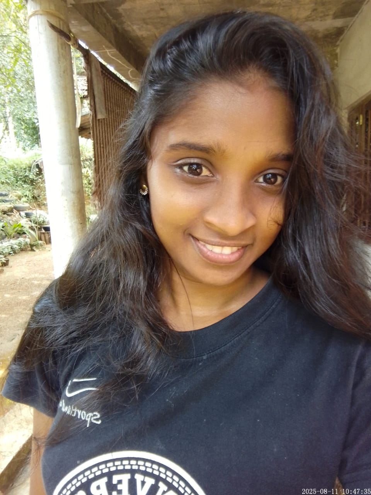
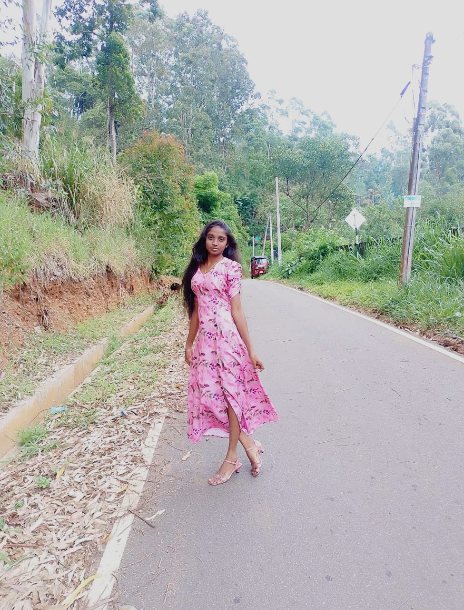
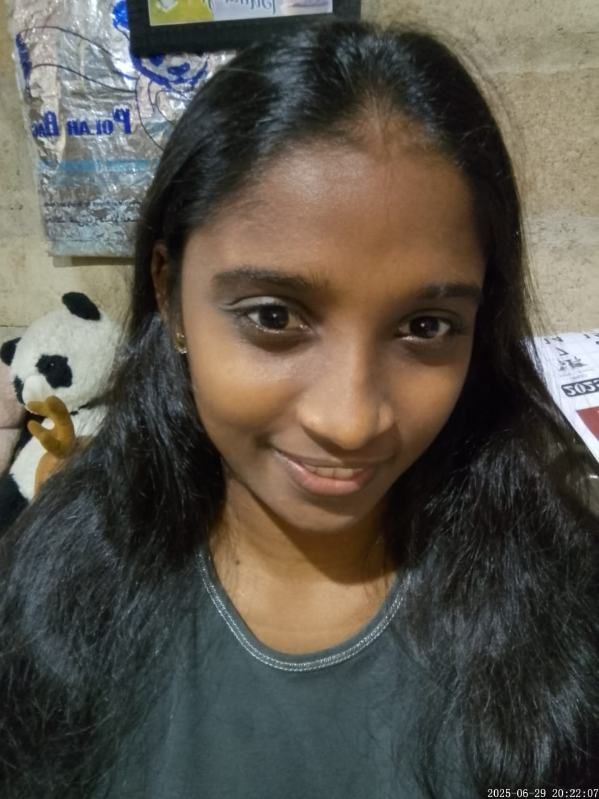
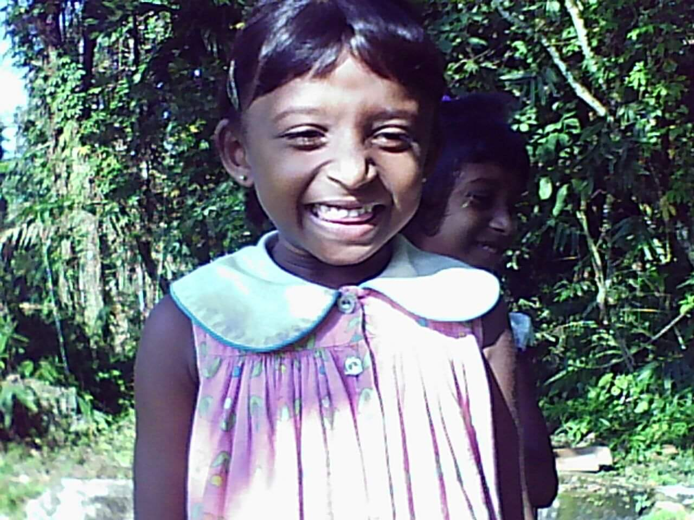
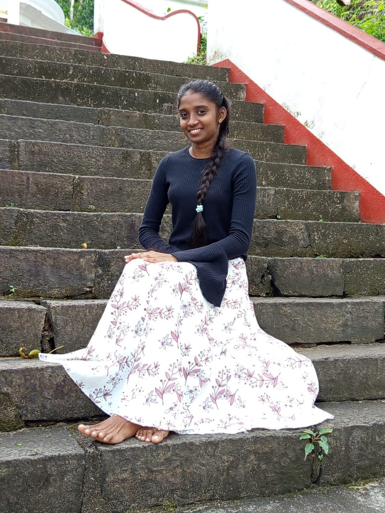
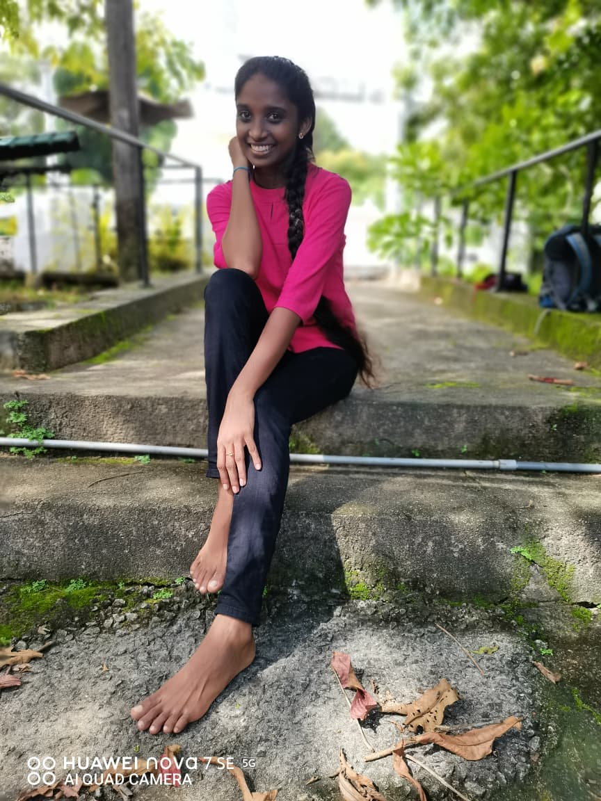
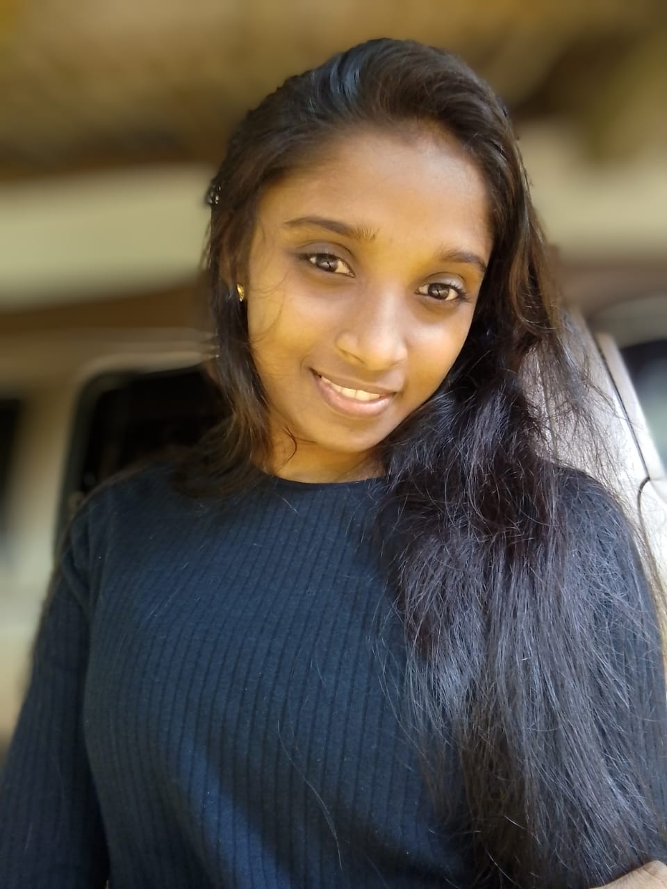

To the girl who taught me that some connections transcend time...
Some things are better said under the night sky...
My dearest Boo 🐻,
As I sit beneath the night sky tonight, looking up at the same moon that shines over both of us, I find myself thinking about how strange and beautiful life can be. Four years of memories. Six months of silence. And somehow, despite all that distance, there are still moments when I feel connected to you in ways I can't explain. Maybe it's just my heart refusing to forget. Maybe it's coincidence. Or maybe some people leave footprints on our souls that time simply cannot erase.
I often think about how easily we assume certain people will always be there. We move through life believing there will always be another conversation, another laugh, another ordinary day together. I never realized how much of my world quietly included you until one day that world became a little quieter.
You were never just another person in my story, Boo. You became part of it — part of my happiest memories, part of my growth, part of the person I am today.
Even now, after everything, when I think of you, I don't think about the ending first. I think about your smile. I think about the laughter. I think about the countless little moments that seemed ordinary at the time but became priceless later. I think about how lucky I was to know you.
You once brought color into days that would have otherwise been forgettable. You made simple moments feel special. You made life feel lighter.
And if there is one thing I want you to know on your birthday, it is this: even though we are no longer walking the same path, I have never stopped wishing the best for you. I hope your dreams come true. I hope your studies take you exactly where you want to go. I hope you find success, peace, and happiness in every chapter that follows.
And no matter how much time passes, no matter where life takes us, I want you to remember something — you can always count on me.
Not because I expect anything in return. Not because I'm asking for the past back. But because caring about you was never something I could simply switch off.
If one day life becomes heavy, if one day you need someone to listen, if one day you feel lost, or if one day you simply want to talk — my door will always be open for you. My messages will always be open for you. There will always be a place where your name is welcomed with a smile.
You will always matter to me.
Maybe life had different plans for us. Maybe the universe is still writing the rest of the story. I don't know what tomorrow holds. But I do know this: meeting you changed me. And no matter what happens next, I will always be grateful that, for a while, our stars shared the same sky.
Before I end this letter, there is one last thing I want you to know. No matter what tomorrow brings, I hope you never feel alone. Life will give you victories to celebrate and battles you never expected to fight. There will be days when everything makes sense and days when nothing does. There will be moments when the road ahead feels clear and moments when the darkness seems endless.
Through all of that, I hope you remember how strong you are. I hope you continue chasing your dreams with the same determination that has always made you special. I hope the future gives you opportunities bigger than anything you have imagined. I hope you build a life that makes you genuinely happy.
And if one day our paths never cross again, that's okay too. Because loving someone doesn't always mean holding on to them. Sometimes it means wanting the best for them, no matter where life takes them.
You will always have a place in my memories. A place that time cannot erase. A place that distance cannot reach. A place that belongs only to you.
Years from now, when I look back at my life, your name will still be among the memories that make me smile. And if, with time, the memories of me become distant for you, that is okay. If life becomes beautiful enough that you no longer need to look back, that is okay. If your future becomes so bright that I become only a small chapter in your story, that is okay too.
Because what matters most to me is that you are happy. Truly happy. I want you to have the future you dream about. I want you to achieve everything you have worked so hard for. I want you to become the incredible engineer, the incredible woman, and the incredible person I always knew you could be.
And wherever life takes you, I hope you never forget that there will always be someone cheering for you from afar. Someone who believes in you. Someone who is proud of you. Someone who will always be grateful that you existed in his life.
So walk toward the future without fear. Dream boldly. Love deeply. Live fully.
And whenever you look up at the night sky, know that somewhere beneath those same stars, there is someone wishing you happiness, success, peace, and every beautiful thing this world can offer.
Wish you a Happy Birthday, Boo 🐻
May tonight's stars shine a little brighter for you. May your future be brighter than the stars above us. And may every dream you carry in your heart find its way home.
With all my love, respect, gratitude, and warmest wishes,
Your Forever Stargazer 🌙✨
Click on each card to reveal a special memory...
That time at the class cards...
Click to revealUnder the night sky...
Click to revealThe story behind the nickname...
Click to revealYour academic journey...
Click to revealYour favorite color...
Click to revealOur unspoken bond...
Click to revealTest your knowledge about the birthday girl!
Click on the falling stars to collect them for Boo!
Collect as many stars as you can in 30 seconds!
Solve the sliding puzzle to reveal a special memory!
💡 Tap/click tiles next to the empty space to slide them. Arrange all 8 tiles in order!
Because what's a birthday without some friendly teasing?
Boo's love for cotton candy is so intense that she could probably power a small city with her sugar rush. If cotton candy were a currency, she'd be a billionaire by now.
She's studying electrical engineering, which means she can probably fix your WiFi but will still ask you to kill the spider in the bathroom. Priorities, people.
Boo loves the night sky so much that she basically has a personal relationship with the moon. The moon is probably tired of her late-night texts by now.
She's called Boo because she's as cuddly as a teddy bear. But let's be real — she's more like a bear who hibernates during exams and emerges only for cotton candy.
Her favorite color is blue, which is convenient because that's also the color she turns when she realizes she has an assignment due in 2 hours.
She believes in past-life connections, which explains why she keeps "accidentally" finishing your sentences. It's not creepy, it's cosmic.
A timeline of moments that shaped us...
The first day of A/L classes. Two strangers walking into the same chapter of life without knowing what the future had planned. It started with simple conversations, shared classes, and ordinary moments. Looking back now, it's amazing how a single day can quietly change the course of someone's life forever.
2019One slightly rainy day, we went together to collect our class cards. Walking under your umbrella between classes, talking about our dreams, our goals, and the future we hoped to build, everything felt exciting and full of possibility. It wasn't a grand adventure, but somehow it became one of the memories I treasure most.
A Beautiful MemoryWe never needed to sit together beneath the stars to share our love for the night sky. Even from different places, we would look up at the same moon and the same endless universe above us. You loved the night sky so much that, somewhere along the way, I started loving it too—not because of the stars themselves but because they always reminded me of you.
Countless NightsWatching Boo pursue her passion for electrical and telecommunication engineering at HND Galle. Her brilliance shining brighter every day.
OngoingTwo months ago, our paths took different directions. Sometimes life writes chapters we never expected, and sometimes love means respecting the journey someone needs to take. Distance may have changed many things, but gratitude for the memories remains unchanged.
2 Months AgoJune 25, 2026. Another year around the sun for the girl who made my world brighter. Happy Birthday, Boo 🐻. It's your special day.
June 25, 2026Press play and feel every moment...
Made with every ounce of love, for the girl who deserves the whole universe. 🌌
Visual memories of our journey together...





